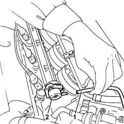

1044C10 fuel pressure regulator - r + r
- Path
- Procedures > 10 ENGINE > 1044 FUEL CIRCUIT PUMP/AND DEVICES > 1044C fuel pressure control devices > 1044C10 fuel pressure regulator - r + r
- Kind
- repair procedure (removal / refitting; the operation number is the code)
- Applies to
- engines: 1.6 TS ; all production periods
- Interactive page
- https://sloeber94.github.io/elrnDB-a156/en/#/3237677
Applies to: engines: 1.6 TS ; all production periods
 Removing
Removing
 Refitting
Refitting1. Disconnect the vacuum intake pipe for the fuel pressure regulator.
2. Remove the clip and remove the pressure regulator complete with O-Ring for the fuel manifold.

Applies to: engines: 1.6 TS ; all production periods
Refitting
RemovingFit the pressure regulator complete with O-Ring in the special housing in the fuel manifold and reposition the clip.
Connect the vacuum intake pipe.